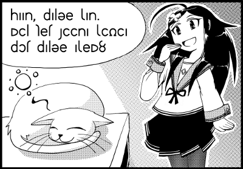

Sitemap
Contents Menu
もどる
辞書の使い方
本文の仕組み
マンガで分かる
１コマ目前編(しあ)
１コマ目後編(しあ)
２コマ目(ゆーれ)
３コマ目(みーふぁ)
４コマ目(ふぇーる)
 この黒髪の女の子は「大人しいゆーれ」だよ。 アルバザードから遠く離れたルティアという国からやってきた転校生。 ルティア人は大人しく頭が良いと言われているけど、ゆーれは特に天才児なのよね。 でも、けっこうおっちょこちょいなところもあって、しあにからかわれてるわ。ふぇーると仲が良いみたい。 あぁ、確かに大人しそうな顔してるね。 心なしか私に似てない？ ほら、口元に手を当てる清楚な感じとか。 うん、大人しさと清楚さを引けばよく似てるね。 ……。 さて、転写するか。 ☆転写 yuule: haan, palue xan. mil ket siina xidia pot palue axem? 1コマ目で出てきた単語がいくつか出てきてるわね。 そうね、おかげで前より簡単に読めそうよ。 haanは感動詞で、「なるほど」か。 xanは……ん？ これはどっちだろう……。 ---- xan ［名詞］真、真実、真相 ［形容詞］本当の、真実の、真の ［文頭純詞］本当は ［副詞］本当に、本気で ［類義語］yuliet ［反意語］enx xan(2) ［rente］xa 18:ridia ---- これはxan(2)のほうだよ。 女の子の口調でxaというと、xanになるってことだね。 xaを出してあげる。 ---- xa ［動詞］solはyul（場所）にいる・ある ［文末純詞］気付きを示す ［純副詞］状態動詞の無相を示す 古xal ［語法］ xa（接頭辞）：xagart（有料） mi（接頭辞）：migart（無料） 注）xa,miはdi,kaloと同じく形容詞的に使っている。 本来garttilなどと言うべきところを、xagartと言っている。 garttilが煩雑なのと、「母なし」などの意味を表わすときはlaalsiよりもmilaalのほうが理解しやすいため。xaは静的な動詞であるため、特別に派生語中では形容詞として使われ、tilに相当する意味を持つ。派生語では形容詞的な接頭辞として働くことに注意。 【用例】 lan di xat atu. そこにはたくさんの人がいた。 skin xa 座っている：skinの状態動詞の無相。 ---- 文末に来てるから[文末純詞]でしょうね。とすると、「気付きを示す」の用法か。 気付きって日本語の「あ、そうだ。今日は雑誌の発売日だった」の「タ」みたいなやつかな。 あるいは、「あぁ、あそこに見えるのは富士山か」の「か」とか。 うん、まぁそんなところね。 自分が知らなかったことに気付いたときに使うのよ。 てことは、"haan, palue xan."は「なるほど、ひだまりか」ってことね。 はいはい、1コマ目で「しあ」が付けた名前を「ゆーれ」が理解したってことね。 ねぇ、ところでxaの動詞用法なんだけど、「solはyul（場所）にいる」ってどういう意味？ solは主語で、yulは目的語を意味するの。括弧して場所って書いてあるから、目的語には場所を指す語が入るのよ。 例えば主語が紫苑で目的語が学校(felka)だとしたら、「紫苑は学校にいる」は"xion xa felka"になるの。 なるほど。動詞の場合、どんな主語や目的語と一緒に使われるかが書いてあるのね。 ちなみに、動詞がどんな格と組み合わせを作るかというのを格組（かっくみ）というのよ。 xaの格組は「sol（人）, yul（場所）」になるわ。 格組は動詞によって異なるの。例えばlat（入れる）の格組は「sol（人）, yul（物）, a（場所）」って具合にね。 ---- lat ［動詞］yulをaに入れる、入る、突入する、詰める ［名詞］入口、入り口 ［動詞］仕舞う、片付ける→fitl ［動詞］入社する、入学する→lod ［反意語］rik 13:制:古:luta（出口） 【成句】 hino yul sa lat すんでのところで耐える、ギリギリのところで保つ lat, toot, zok, rik 起承転結。入口、坂道、頂上、出口：山道に喩えている。 【用例】 an hinot ena sa lat. 涙をぐっとこらえた。 an hinot jo sa lat. 怒りが爆発する寸前だった。 ---- latの場合、solについては書いてないけど、それは自明だからかな。 入れる人は主語に来るに決まってるから、わざわざ「solはyulをaに入れる」と書かないんだね。 一方、入れられるほうは「物」なのか「収納先」なのか迷うかもしれないので、「yulをaに入れる」と書いてあるんだね。 こう書いてあれば「物」がyulに来るんだろうなって分かるから。 そうだね。 latには「入れる」のほかに「仕舞う」という語義もあるけど、ここには格組が書いてないね。 書いてない場合は、特に難しく考えず日本語と同じで良いってことだよ。 そうなんだ？ この場合、「～を(yul）～に(a)仕舞う」という風に、日本語から考えれば格組が分かるってことね。 そうそう。 次は"mil ket siina xidia pot palue axem?"だね。 milはちょっと説明がいるかな。辞書を見ると「弱原因」ってあるよね。 becauseはmanだって理論編でやったけど、milもbecauseになります。 manとmilは何が違うの？ manのほうが原因と結果の距離が近いの。milのほうが原因としてしっかりしてないってこと。 でも実際は単に口調の違いよ。女の子はmanと思っていても自信なさげにmilと言うのが習慣なの。 milはbecauseだったね。お題は"mil ket siina xidia pot palue axem?"。 ketは猫で、主語。siinaは……好むという動詞か。 xidiaは夢なのね。じゃあ、「猫は夢が好き」ってこと？ 実はsiinaもxidiaも動詞なのです。ここは動詞が連続しているの。 ゆーれは女の子なので、xidiaを「寝る」という意味の動詞として使うのよ。本来「寝る」はmokなんだけど。 つまり、「猫は寝るのが好き」という意味か。 英語の"like ～ing"とか"love to～"みたいな感じだね。次はpotか。 ---- pot ［名詞］中 ［格詞］～の中に ［反意語］tant 古:pot,poto ---- potは「中」って意味だけど、格詞で「～の中に」という意味があるのね。 格詞は英語だと前置詞だから、inにあたるのかな。 pot palueで、「ぱるえの中で」か……。 んん？「ぱるえ」って猫の名前だよね。「ぱるえはぱるえの中で寝るのが好き」なの！？ あ、いや、そうじゃなくてね。pot palueのpalueは「ひだまり」という一般名詞よ。 名前のpalueと、ひだまりのpalueが一緒なの。 ほら、日本語でも「さくらちゃん」って女の子がいるでしょう？ あぁなるほど、そういうことか。 "mil ket siina xidia pot palue axem?"の訳は「猫はひだまりの中で寝るのが好きだからね？」か。 はいはい。しあが1コマ目で猫にpalueと名付けたのを受けて、ゆーれは名前の由来をしあに確認してるのね。 つまり、「しあちゃん、猫がひだまりで寝るのを好きなのを知ってて、この子にぱるえって名付けたんでしょう？」って言いたいのね。 よくできました(^-^) これでマンガも折り返し地点だね。atte!（がんばって！）